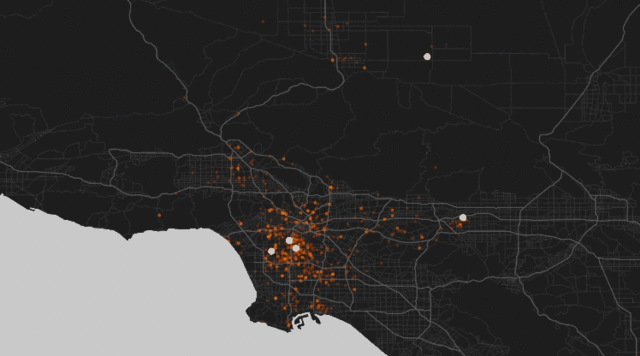
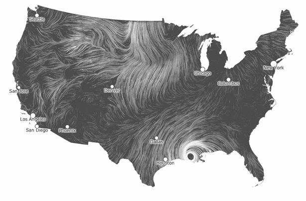
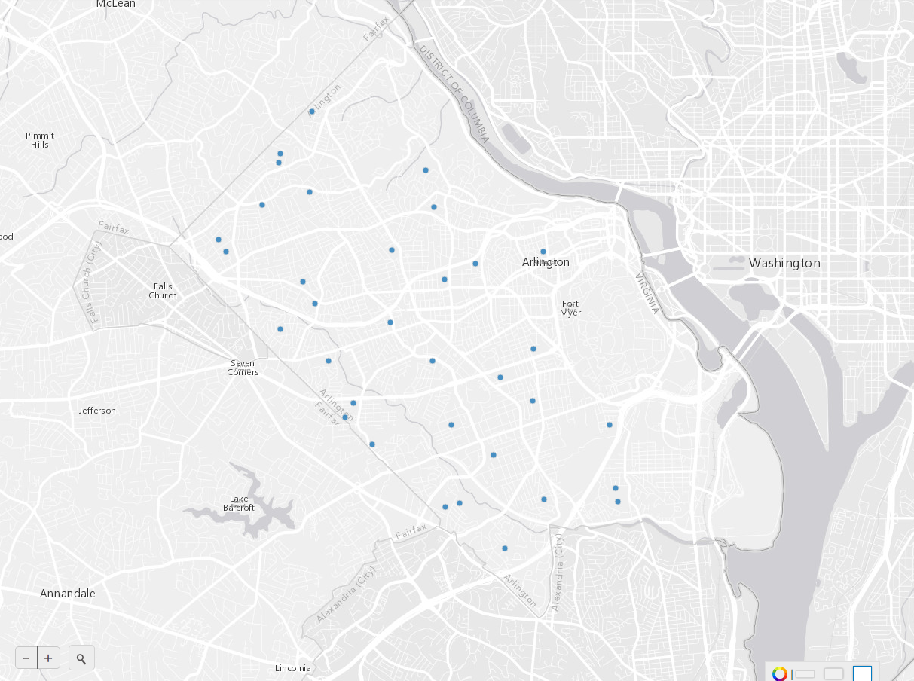
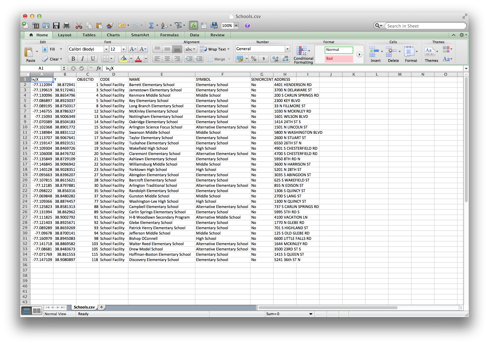
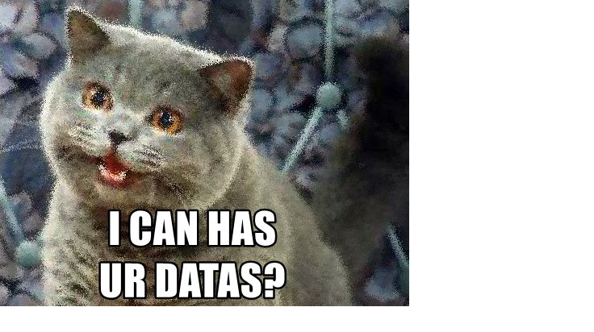
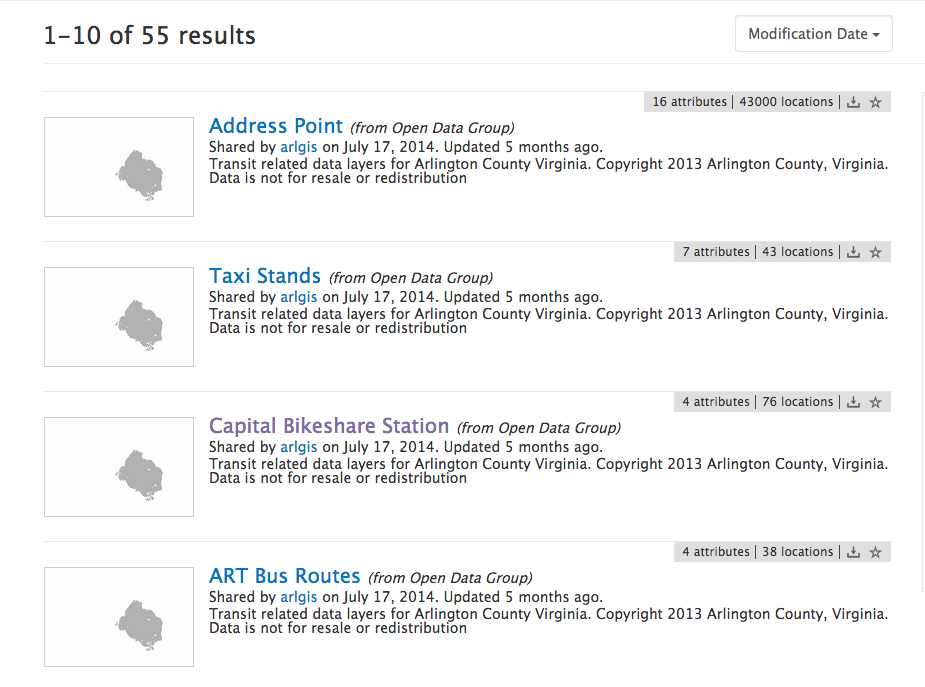
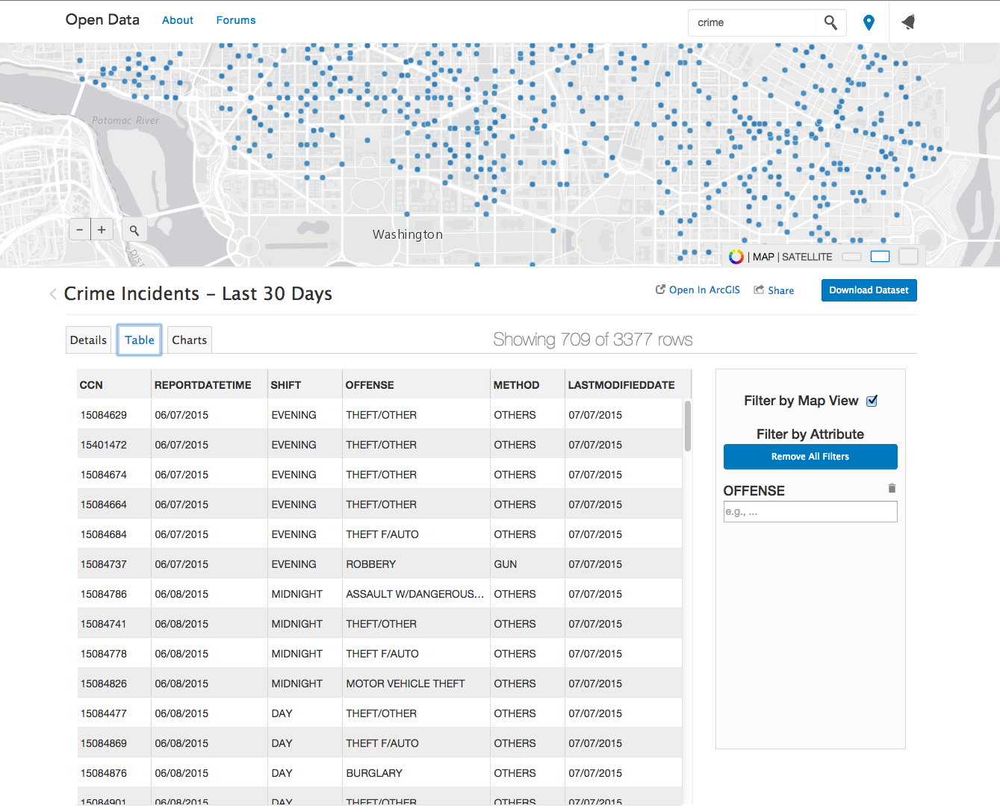
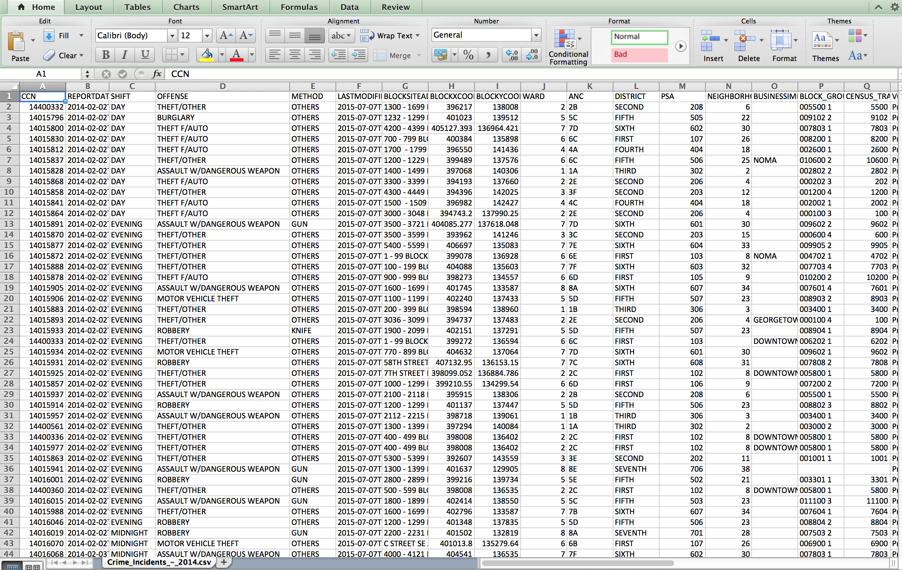

esri and open data and you
please interrupt if you have questions!
about you
engineering?
journalism?
advocacy?
business?
theatre?
what is open data and why should i care?
cities are made of data!
crime
countries are made of data!
weather
open data has three main points:
free
free
machine readable
free
machine readable
available
what can we use this data for?
research projects!
business ideas!
newspaper articles!
everyday questions!
what might this data look like?
maps and tables


cities have data... can i have it?

yes!
governments across the country are opening their data for you to use.
what's esri got to do with it?
we help our users release their data.
building the house for the data to live in.

access the data.

download the data.

YOU can do it!
opendata.arcgis.com
about me
then: student
now: product engineer
customers: people skills
product decisions: prioritization
open data cheerleader: passion
Courtney Claessens cclaessens@esri.com @sidewalkballet